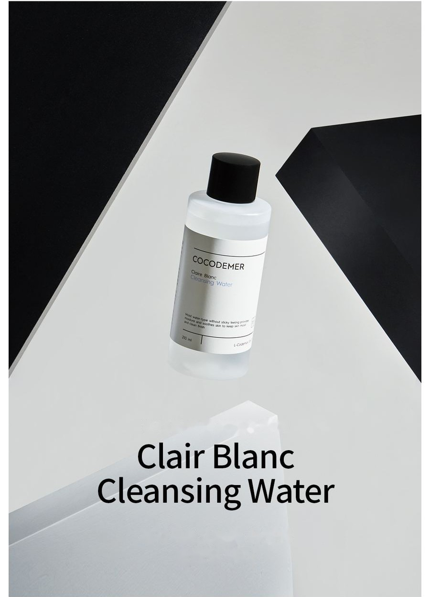
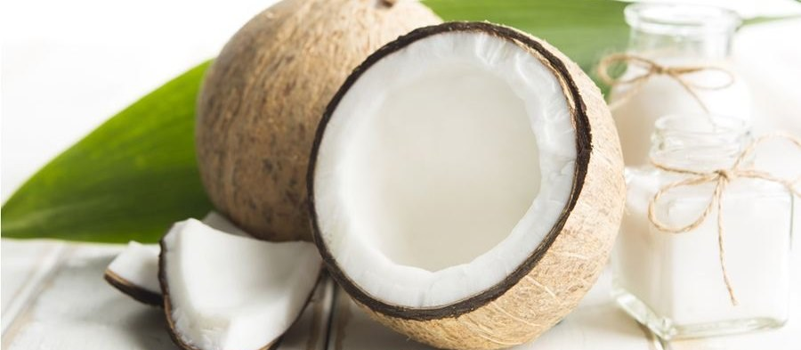
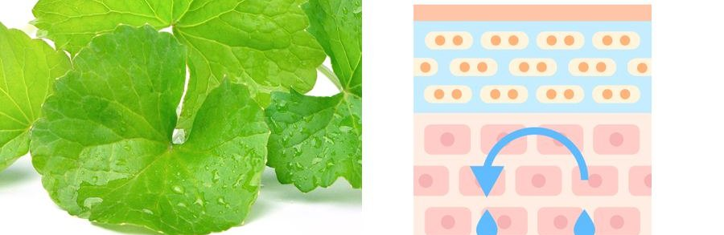
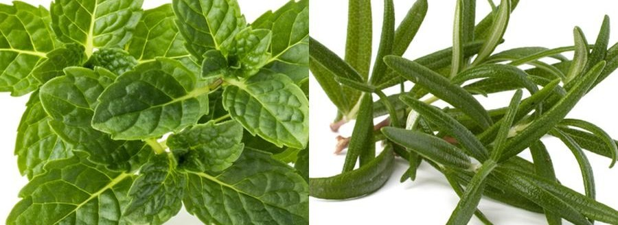

COCODEMER Clair Blanc Cleansing Water
| Inhalt | 210ml |
|---|---|
| Geeignet für | Alle Hauttypen |
| Schlüsseltechnologie | L-CODEMAR ELIXIR™ |
| Hersteller · Verantwortlicher Vertreiber | JUNGCOS CO., LTD. / COCODEMER CO., LTD. |
Dieses Produkt wurde im Rahmen unseres Angebots an individueller Kosmetik entwickelt. Derzeit nicht im Handel erhältlich. Für Anfragen zu Neuauflage oder Erneuerung kontaktieren Sie uns bitte über die B2B-Anfrage.

Ein sanftes, intensiv feuchtigkeitsspendendes Reinigungswasser mit frischem Finish
Ein Reinigungswasser für einen einzigen Schritt, das gründliche Reinigung mit pflegenden Eigenschaften verbindet
Milde reinigende Inhaltsstoffe und hautfreundliche Pflanzenstoffe lösen Unreinheiten und Make-up sanft und gründlich – bei minimaler Reizung.
Eine leichte, wässrige Textur spendet Feuchtigkeit ohne zu kleben und hilft, die Haut zu beruhigen. Nach der Reinigung fühlt sich die Haut feucht statt gespannt an, mit einem frischen Finish ohne Rückstände.
Öl natürlichen Ursprungs aus der Kokospalme entfernt Make-up einfach und sauber.
Eine Formel auf Wasserbasis für einen einzigen Schritt, die kein Abspülen erfordert. Sie entfernt Augen-, Lippen- und Gesichts-Make-up gründlich, ohne die Haut zu reizen.
Ein mildes, aus Kokos gewonnenes Tensid reinigt reizarm und hinterlässt einen Feuchtigkeitsschleier, sodass sich die Haut danach reichhaltig durchfeuchtet anfühlt.
Auf Basis von Cocos Nucifera (Coconut) Water, mit Pflanzenstoffen wie Apfelminzblattextrakt, Salbeiblattextrakt, Rosmarinblattextrakt und Pfefferminzblattextrakt, beruhigt es die Haut hervorragend.
* Die obigen Angaben gelten nur für den jeweiligen Inhaltsstoff.
Schlüsselwirkstoff-Code
- CaCentella AsiaticaHautberuhigung
- HiHydrogenated LecithinHautkonditionierung
- CnCeramide NPBarrierestärkung

43% reinigende Inhaltsstoffe natürlichen Ursprungs aus Kokosöl helfen, einen dichten, üppigen Schaum aufzubauen. Er löst Make-up-Rückstände und Unreinheiten tief aus den Poren, ohne die Haut zu reizen.

Wasserlösliche feuchtigkeitsspendende Inhaltsstoffe bilden auch nach der Tiefenreinigung einen schützenden Feuchtigkeitsschleier und helfen, empfindlich gewordene Haut zu beruhigen.

Pflanzenstoffe, die der Haut Vitalität verleihen, helfen, die Poren nach einer Tiefenreinigung zu verfeinern.
* Die obigen Angaben beschreiben die Inhaltsstoffe, nicht das fertige Produkt.
Inhaltsstoff-Referenz ansehen →
L-CODEMAR ELIXIR™
Eine eigene Technologie von COCODEMER.
Unsere einzigartige mehrschichtige Nanogel-Emulsions-Verkapselungstechnologie bindet die Kernwirkstoffe – Kokoswasser, Phytosterole, 20 Aminosäuren und Honigextrakt – in einem stabilen Komplex. Dieser Komplex wird anschließend in eine hautfreundliche liposomale Form gebracht, die der Struktur der Haut selbst nachempfunden ist, und maximiert so die Effizienz der Abgabe in die Haut.
L-Codemar Elixir™ stärkt den Zusammenhalt zwischen den Hautzellen. Es stellt eine geschädigte Barriere wieder her und bildet einen starken Schutzfilm, sodass die Feuchtigkeit länger erhalten bleibt.

Text im Bild oben
L-CODEMAR ELIXIR™
- KOKOSWASSER
- HONIGEXTRAKT
- 20 ARTEN VON AMINOSÄUREN
- PHYTOSTEROL

Text im Bild oben
- Mikroben, Feinstaub, Gelbstaub, Schadstoffe und Luftverschmutzung
- Übermäßiger Wasserverlust
Geschädigte Haut
Geschädigte interzelluläre Lipide schwächen die Bindungen zwischen den Epidermiszellen
- Zugeführte interzelluläre Lipide ↑
- Wirkstoffe
- Wehrt äußeren Stress und Schadstoffe ab
- Weniger Wasserverlust
Gesunde Haut
Wieder aufgefüllte Lipide stellen die interzelluläre Matrix wieder her → stärkere Bindungen zwischen den Zellen
Anwendung
- Ein Wattepad gründlich mit dem Produkt tränken.
- Über Stirn, dann Wangen und Kinn von der Mitte nach außen entlang der Hautstruktur abwischen.
Ein Reinigungswasser für einen einzigen Schritt, das gründliche Reinigung mit pflegenden Eigenschaften verbindet
Milde reinigende Inhaltsstoffe und hautfreundliche Pflanzenstoffe lösen Unreinheiten und Make-up sanft und gründlich – bei minimaler Reizung.
Eine leichte, wässrige Textur spendet Feuchtigkeit ohne zu kleben und hilft, die Haut zu beruhigen. Nach der Reinigung fühlt sich die Haut feucht statt gespannt an, mit einem frischen Finish ohne Rückstände.
Öl natürlichen Ursprungs aus der Kokospalme entfernt Make-up einfach und sauber.
Eine Formel auf Wasserbasis für einen einzigen Schritt, die kein Abspülen erfordert. Sie entfernt Augen-, Lippen- und Gesichts-Make-up gründlich, ohne die Haut zu reizen.
Ein mildes, aus Kokos gewonnenes Tensid reinigt reizarm und hinterlässt einen Feuchtigkeitsschleier, sodass sich die Haut danach reichhaltig durchfeuchtet anfühlt.
Auf Basis von Cocos Nucifera (Coconut) Water, mit Pflanzenstoffen wie Apfelminzblattextrakt, Salbeiblattextrakt, Rosmarinblattextrakt und Pfefferminzblattextrakt, beruhigt es die Haut hervorragend.
43% reinigende Inhaltsstoffe natürlichen Ursprungs aus Kokosöl helfen, einen dichten, üppigen Schaum aufzubauen. Er löst Make-up-Rückstände und Unreinheiten tief aus den Poren, ohne die Haut zu reizen.
Wasserlösliche feuchtigkeitsspendende Inhaltsstoffe bilden auch nach der Tiefenreinigung einen schützenden Feuchtigkeitsschleier und helfen, empfindlich gewordene Haut zu beruhigen.
Pflanzenstoffe, die der Haut Vitalität verleihen, helfen, die Poren nach einer Tiefenreinigung zu verfeinern.
* Die obigen Angaben beschreiben die Inhaltsstoffe, nicht das fertige Produkt.
L-CODEMAR ELIXIR™
Eine eigene Technologie von COCODEMER. Unsere einzigartige mehrschichtige Nanogel-Emulsions-Verkapselungstechnologie bindet die Kernwirkstoffe – Kokoswasser, Phytosterole, 20 Aminosäuren und Honigextrakt – in einem stabilen Komplex. Dieser Komplex wird anschließend in eine hautfreundliche liposomale Form gebracht, die der Struktur der Haut selbst nachempfunden ist, und maximiert so die Effizienz der Abgabe in die Haut. L-Codemar Elixir™ stärkt den Zusammenhalt zwischen den Hautzellen. Es stellt eine geschädigte Barriere wieder her und bildet einen starken Schutzfilm, sodass die Feuchtigkeit länger erhalten bleibt.
① Ein Wattepad gründlich mit dem Produkt tränken. ② Über Stirn, dann Wangen und Kinn von der Mitte nach außen entlang der Hautstruktur abwischen.
| Nennfüllmenge (Volumen oder Gewicht) | 210ml |
|---|---|
| Geeignet für | Alle Hauttypen |
| Mindesthaltbarkeit / Verwendbarkeit nach dem Öffnen | 30 Monate ab Herstellungsdatum; nach dem Öffnen innerhalb von 12 Monaten verwenden |
| Anwendung | Ein Wattepad mit dem Produkt tränken und nacheinander über Stirn, Wangen und Kinn von innen nach außen entlang der natürlichen Hautstruktur streichen. |
| Kosmetikhersteller | JUNGCOS CO., LTD. |
| Verantwortlicher Vertreiber | COCODEMER CO., LTD. |
| Herkunftsland | Republik Korea |
| Vollständige Inhaltsstoffe (INCI) | Cocos Nucifera (Coconut) Water, Butylene Glycol, PEG-6 Caprylic/Capric Glycerides, 1,2-Hexanediol, Centella Asiatica Extract, Ficus Carica (Fig) Fruit Extract, Honey Extract, Mentha Piperita (Peppermint) Leaf Extract, Mentha Suaveolens (Apple Mint) Leaf Extract, Rosmarinus Officinalis (Rosemary) Leaf Extract, Salvia Officinalis (Sage) Leaf Extract, Hydrogenated Lecithin, 2,3-Butanediol, Alanine, Arginine, Aspartic Acid, Carnitine, Ceramide NP, Citric Acid, Citrulline, Disodium EDTA, Ethylhexylglycerin, Glutamic Acid, Glutamine, Glycerin, Glycine, Isoleucine, Leucine, Methionine, Ornithine, Phenylalanine, Phytosterols, Proline, Serine, Sodium Citrate, Threonine, Tryptophan, Tyrosine, Valine, Water, Fragrance (Parfum) |
| Zulassung als funktionelles Kosmetikum | Nicht zutreffend |
| Warnhinweise | 1. Bei roten Flecken, Schwellungen, Juckreiz oder anderen ungewöhnlichen Reaktionen im Anwendungsbereich während oder nach der Anwendung oder nach Einwirkung direkter Sonneneinstrahlung einen Facharzt konsultieren. 2. Die Anwendung auf verletzter oder offener Haut vermeiden. 3. Lagerung und Handhabung a) Für Kinder unzugänglich aufbewahren. b) Vor direkter Sonneneinstrahlung geschützt lagern. |
| Qualitätsgarantie | Im Fall eines Mangels erfolgt die Entschädigung gemäß den von der koreanischen Fair Trade Commission veröffentlichten Standards zur Beilegung von Verbraucherstreitigkeiten. |
| Kundenanfragen | 010-3307-9341 / cocodemer@cocodemer.co.kr |
* Pflichtangaben gemäß den koreanischen Vorschriften zur Kennzeichnung und Bewerbung von Kosmetika. Dies ist eine Referenzübersetzung; für die zertifizierte Inhaltsstoffdeklaration, den CPSR oder das CoA kontaktieren Sie uns bitte über die B2B-Anfrage.